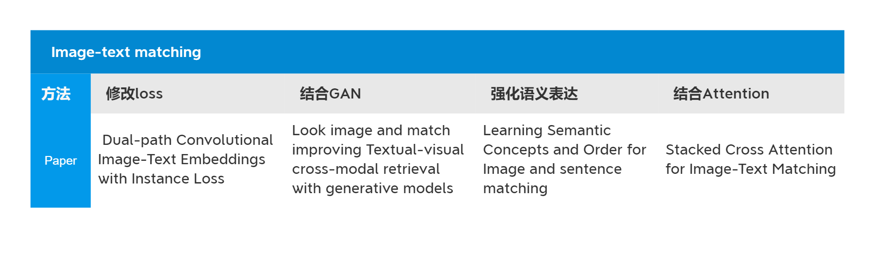
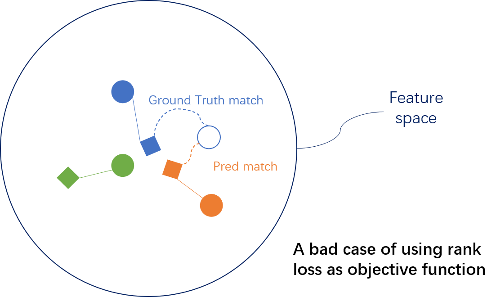
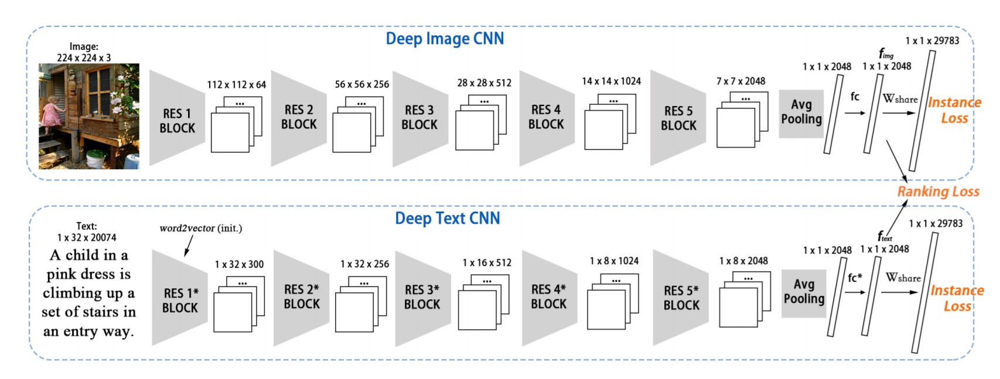
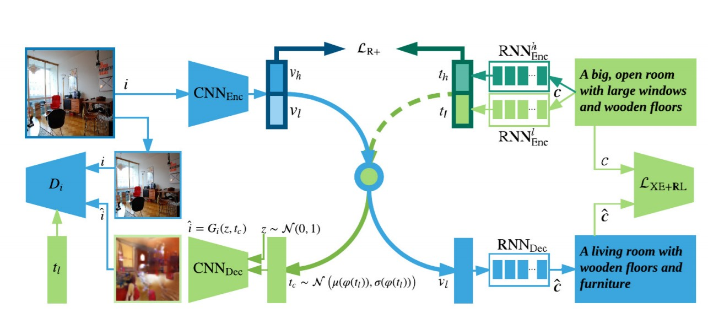
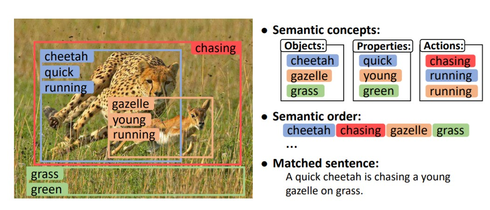
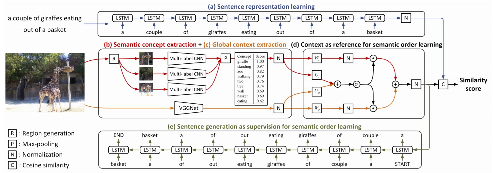
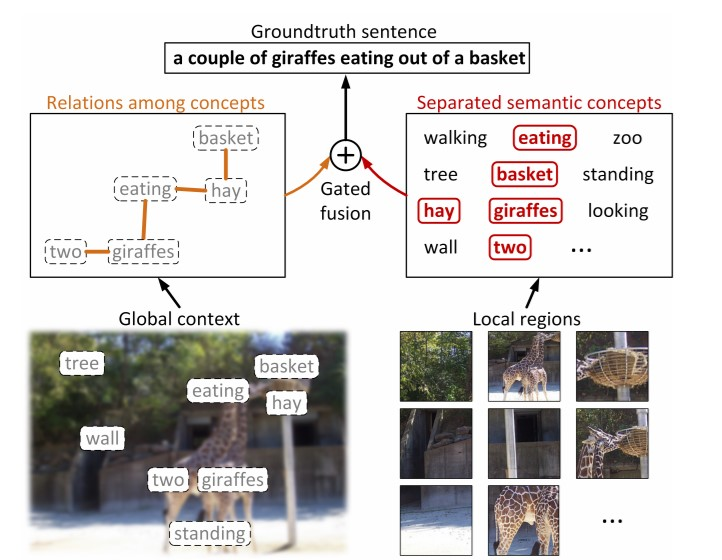
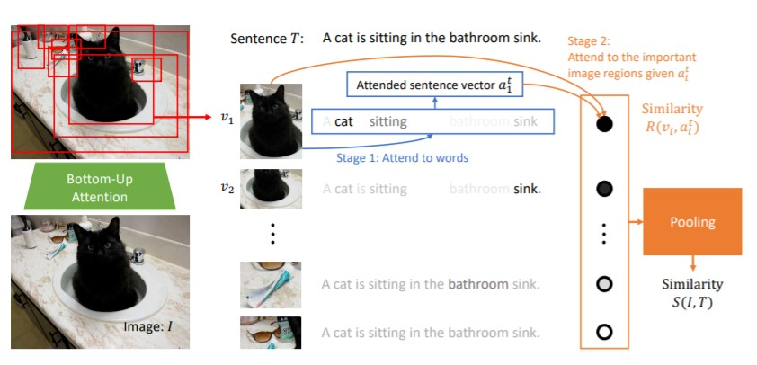
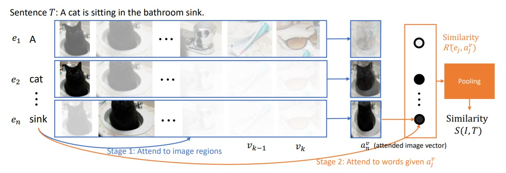
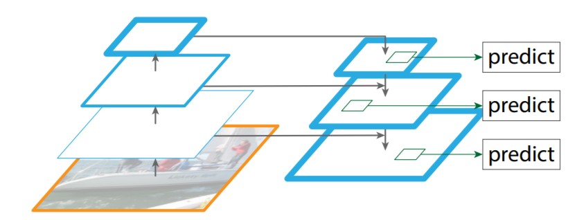

学术研讨 课程报告
image-text matching 论文研读
人脸识别小组 - 杨佳智 - 2018141461236
Introduction to image-text matching
问题描述：
给定文本，从数据库中找到具有相同含义的图像。或者给定图像，从数据库中找到具有相同含义的文本 。图文匹配问题又称为图文检索问题，属于跨模态检索中的一个类别。常见的应用场景有: img1.用户给定一段图片描述，从图像库中找到于其匹配的图片。2. 安保系统中，给定行人描述，从摄像头记录的数据中找到最符合描述的行人。
通用Pipeline：
将图像数据与文本数据映射到同一个高维的特征空间中，并使得含义匹配的数据对(image-text)足够接近，含义不匹配的数据对距离较远。建立了这样的映射关系之后，当获取了一个图像(或文本)数据时，便可以在特征空间中选择最近的文本(或图像)数据与之匹配，由此便实现了图像文本检索/匹配。
相关数据集:
Flickr30k, MSCOCO, CUHK-PEDES
主要难点:
如何充分提取图像与文本中的语义
如何合理地将图像与文本映射到同一特征空间
如何正确地度量文本与图像在特征空间中的距离
论文纲要:
Dual-path Convolutional Image-Text Embeddings with Instance Loss (TOMM 2020)
From TOMM 2020
这篇文章算是我了解image-text matching 这个领域的启蒙之作，本文对于图文匹配的问题提出了一种新的思路 – 将每一个 (image,text) pair视为一个类别，以更好地对数据中的细粒度 (fine granularity) 进行学习。 并且本文提出了一种新的损失函数instance loss, 相较于常用的ranking loss, instance loss 可以学习到更具有判别性 (discriminative) 的特征映射。同时，本文提出的模型基于端到端训练，让模型能更好地利用监督数据。
Image-text matching领域中常用ranking loss作为损失函数。ranking loss的作用是让正确的数据对 (positive pair) 之间的距离小于错误的数据对 (negative pair) 之间的距离。该损失函数主要注重的是两个模态数据之间的距离 (差异)，但是较少地考虑了单个模态内部的特征分布 – 即ranking loss在训练阶段时不会特别区分图像数据中或者文本数据中的细微差异，使其在映射空间中距离较小 。比如：颜色不同，数量不同的数据在特征空间中不能被很好地区分开，之后在测试阶段时便可能返回相近但不匹配的数据。
下图展示了使用ranking loss可能出现的一个bad case：在如下特征空间中，圆形表示图像数据，方形表示文本数据，实线相连的数据对表示正确的匹配，同时实心表示训练数据，空心表示测试数据。由于ranking loss对微小差异的区分能力不足，蓝色的文本数据和橙色的文本数据映射到特征空间后距离很近，当新的测试图像数据 (蓝色圆形) 映射到特征空间后，会被判定为距离橙色文本数据更近，而进行错误的匹配。因此本文提出了instance loss以ranking loss对同模态数据的判别力不足的缺点。
对于图像部分，之前的image-text matching模型通常使用预训练得到的分类网络用于图像特征学习 (eg: 在imagenet上预训练得到的分类网络)，但是这些分类网络通常用于将物体划分至较大的类别中 (eg: 猫，狗，车等)，因而很容易忽略图像中的细节 (eg: 颜色，数量，环境) ，这些细节信息的缺失会对图文匹配的结果造成很大的影响。因此本文并未采用预训练模型，而是堆叠了多个残差单元，从头开始训练。对于文字部分的特征学习则是采用word2vec + CNN实现。整体模型Pipeline如下图所示，其中损失函数由instance loss 和 ranking loss两部分组成。
Ranking loss:
$I$ 表示图像输入，$T$ 表示文本输入，给定一个元组 $(I_a,T_a,I_n,T_n)$，$(I_a,T_a)$ 表示正样本 – 即 $I_a,T_a$ 为一对正确的匹配，$I_n,T_n$ 为负样本 – 即 $I_n,T_n$ 为一对错误的匹配。$D(\cdot,\cdot)$ 表示余弦相似度。
$$
L_{rank} = \overbrace{max[0,\alpha-(D(f_{I_a},f_{T_a}) - D(f_{I_a},f_{T_n}))] }^{image \ anchor}+\underbrace{max[0,\alpha-(D(f_{T_a},f_{I_a}) - D(f_{T_a},f_{I_n}))]}_{test\ anchor}
$$
Instance loss:
$$
P_{visual} = softmax(W^T_{share}f_{img})\
L_{visual} = -log(P_{visual}(c))\
P_{textual} = softmax(W^T_{share}f_{text})\
L_{textual} = -log(P_{text}(c))
$$
$W_{share}.shape: (2048,29783)$ ， $L_{visual},L_{textual}$ 分别表示图像部分以及文本部分的损失，$P$ 表示分属于每个类别的概率，$P(c)$ 表示属于正确类别的概率。
$$
L_{instance} = \lambda_1 L_{visual} + \lambda_2L_{textual}\
L_{final} = L_{instance}+L_{rank}
$$
个人思考：
img1. instance loss的构造思路简单直观，增强了模型对单模态数据内部特征的辨别力。
2. 对于文字部分的特征学习，本文并未采用常用的RNN结构，而是使用了带有残差模块的CNN，并取得了很好的效果。(个人推测，使用CNN处理文字保证了图像特征学习和文字特征学习过程的一致性，尽可能地使文本数据和图像数据embedding 到同一个特征空间，因此效果比RNN好。)
Look image and match improving Textual-visual cross-modal retrieval with generative models
From CVPR 2018 spotlight
图文匹配中的一个主要的困难是，不同模态的数据具有空间，结构上的异质性(Heterogeneity)。并且，该类问题对细粒度区分的要求较高。本文将生成模型运用到图文匹配中，使得模型不仅可以学习数据全局的抽象特征，还可以学习到局部的浅层特征，以更好地完成匹配的任务。
在图文匹配中，一个通用的方法便是首先将文本和图像各自编码为特征向量，再将两类特征向量映射到共同的语义空间中，该过程通常使用ranking loss进行优化，使得原本匹配的(图像-文本)数据对在映射到共同的语义空间后，相似度比不匹配的数据对高。但这种常见流程存在一定的缺陷，即高维的特征向量可以很好地表示原本数据的高度抽象语义，但不足以表示详细的浅层语义。因此当检索的图像和文本在浅层语义上相似度较高时，传统的方法便不足以进行分辨。本文引入了生成模型的思想，使得模型可以同时对浅层特征和高层特征进行学习。
实现方法：将注意力放在更加详尽的细节上。不仅在高层语义上进行特征学习，还要结合生成模型在浅层语义上进行特征映射。如上图所示，整个模型分为上下两个部分，上方为特征学习部分，下方为数据生成部分。原始图像数据通过 $CNN_{Enc}$ 之后得到图像特征 $v=(v_h,v_l)$ ，原始文本特征分别通过两个 $RNN_{Enc}$ 后得到文本特征 $t=(t_h,t_l)$ 。其中，$v_h,t_h$ 表示高层的抽象特征，$v_l,t_l$ 表示精细的浅层特征。之后 $v_l$ 通过 $RNN_{Dec}$ 生成一个文本数据，并于原始文本数据进行对比计算出损失；$t_l$ 经过一个对抗生成网络生成一个图像数据，与原始图像数据进行对比计算损失。整个模型的损失函数包含三部分，$(v_h,t_h)$ 之间的损失，原始文本与 $v_l$ 生成文本之间损失，以及原始图像与 $t_l$ 生成图像之间的损失。
在测试阶段，我们使用 $v=(v_h,v_l)$，$t=(t_h,t_l)$ 作为数据的特征表达。在生成数据的协助下，$(v_l,t_l)$ 的接近表示了图像和文本在低维语义上的近似，$(v_h,t_h)$ 表示在高维抽象上的近似，高层信息和浅层信息都得到了很好的学习。
Learning Semantic Concepts and Order for Image and sentence matching
From CVPR 2020
图像和文本之间通常具有较大的语义差异，这主要是因为像素级别的图像表示缺乏文本级的高层语义信息。如下图所示，左图和右下方的句子为一对匹配的数据。左图中的主要物体有: {cheetah, gazelle, grass}，它们的性质有: {quick, young, green}，动作有: {chasing, running}。在进行图文匹配的过程中，这些高层的语义概念是比较两者相似性的重要部分，但是这些语义信息却无法简单地从像素级的图像中获得。因此为了增强图像的语义表达，作者的方案中首先学习了图像中的各种语义概念，之后将这些概念通过正确的顺序进行组合，再文本匹配，有效地提高了匹配的准确率。
对于图像数据，本文首先使用了多区域(Multi-regional)，多标签(Multilabel) $CNN$去预测图像中的语义概念，包括物体、性质、动作等。由于语义概念的不同顺序会导致不同的语义，本文又采用了含门控模块的文本生成方法进行语义顺序的学习，该方法将同时利用三部分信息作为监督信息：1. 图像的全局信息，2. 不同概念之间的联系，3. 实际的 (groundtruth) 语义顺序。对于文本数据，本文采用了卷积LSTM进行特征学习。
之前常用的方法在处理图像时，通常让图像通过一个CNN网络，从中提取出一个含有全局语义的特征向量。但在全局的特征向量中，各概念呈现相互纠缠 (tangled) 的状态，且背景等次要信息很容易被忽略。
除了考虑图像中的各语义概念，我们还需要考虑如何正确组织这些概念。相同的一组语义概念经过不同的组合方式会得到不同的含义。例如上图中, 如果我们将其中的语义概念错误地组织为: a quick gazelle is chasing a young cheetah on grass，那么其表示的意义原图截然不同。
我们使用一个多区域，多标签的的CNN网络同时对图像中的多个概念 (concept) 进行提取。由于图像的全局信息包含了所有语义概念的空间信息，我们将得到的概念与图像的全局信息进行融合，以进行语义顺序的学习。之后我们用对应文本中的真实的语义顺序作为监督，以驱使融合后的图像特征去生成对应的匹配文本。
文章提出的模型整体Pipeline如上图所示，总共包含一下几个方面：1. 用卷积LSTM学习文本表示, 2. 用多区域 (multi-region) 多标签 (multi-label) CNN 学习图像表示, 3. 用上下文相关的文本生成方案进行语义顺序学习。
上图表示利用CNN提取得到的多个语义概念，结合全局信息作为参考，通过门控融合单元，对语义概念的组织顺序进行学习。考虑到在不同的图像中，全局信息和语义概念的重要性存在差异，对于成分复杂的图像，全局信息较复杂抽象，应该更多地利用语义概念，而对于成分简单的图像，语义概念较少，因此利用全局信息进行语义概念的组织便更为重要。门控单元便是平衡模型对于各语义概念和全局信息的重视程度。令全局信息向量为 $x\in \mathbb{R}^{I}$，语义概念向量为$p\in \mathbb{R}^K$，则门控单元的融合操作可以表示为：
$$
\hat{p}=||W_lp||_2, \ \hat{x}=||W_gx||_2,\ t = \sigma(U_lp+U_gx)\
v = t\odot \hat{p}+(img1-t)\odot\hat{x}
$$
则 $v\in \mathbb{R}^H$ 为全局信息和语义概念的融合表示，即图像特征的最终表达。
我们将得到的融合图像表达送入文本生成模型，并用真实的文本作为监督，使LSTM模型能根据图像特征生成匹配的文本。需要注意是，文本生成只在训练阶段进行，在测试阶段只需要计算图像的全局信息($x$)，语义概念($p$)，以及最终的图像表达($v$)；文本数据则只需通过pipeline上方的LSTM模块进行特征映射即可。
该模型的整体损失函数定义为：
$$
L = L_{mat} + \lambda L_{gen}\
L_{mat} = \sum_{ik}max{0,m-s_{ii}+s_{ik}} + max{0,m-s_{ii}+s_{ki}} \
L_{gen} = -\sum_{t}logP(w_t|w_{t-img1},w_{t-2},…,w_0,x,p)
$$
$L_{mat}$ 即常用的ranking loss，用于度量特征空间中图像特征和文本特征之间的差异，$s_{ii}$是相互匹配的 $i-th$ 图像和 $i-th$ 文本之间的相似性，$s_{ik}$ 是不相匹配的图像和文本特征之间的相似性。减小 $L_{mat}$ 即驱使相互匹配的数据相似性更高，使得不匹配的数据相似性更低；$L_{gen}$ 用于度量图像特征生成的文本和真实匹配的文本之间的差异，通过使得生成文本与真实文本逐渐相似，以学习文本中对于语义概念的组织顺序。
个人思考：
本文主要的贡献点有两个：
img1. 以前通常的方法是直接将图像通过一个CNN网络得到一个全局的特征向量，该全局向量并未明却表示图像中各语义概念，所有概念之间呈现一种纠缠的关系。而本文的方法利用了multi-region，multi-label的CNN网络对图像中的所有概念进行了提取，并结合全局向量作为图像的最终表示。- 使用了生成模型，个人觉得主要目的是让最终的图像向量和文本向量能尽可能处于同一特征空间中。
不足的地方：
img1. 用multi-region，multi-label的CNN网络对语义概念进行提取时，只能得到图像中物体类别概念，而无法明确的到属性，动作等概念。即概念提取过程中存在信息缺失。
- 图像数据的最终表达同时结合了全局向量和语义概念向量，但是全局向量中不仅包含语义概念之间的顺序信息，还包含语义概念本身，两者之间并没有解耦。也就是说，最终图像的表达考虑了两次语义概念信息，但只考虑了一次顺序信息。
Stacked Cross Attention for Image-Text Matching
From ECCV 2018
本文的切入点来自于两个常识性的现象：1. 当人们在描述所看见的事物时，会频繁地描述图像 (或视野) 中的主要物体及其性质和动作。2. 文本描述中的不同词组通常对应着图像中的不同区域。推测出图像区域以及文本词组之间的隐性联系可以让图文匹配过程更具有解释性。而Attention机制可以很好的处理图像区域以及文本词组的重要性，因此本文自然地引入了Attention机制。
本文的最终目的是更好地将图像和文本映射到同一高维空间中，以准确度量文本和图像之间的差异。首先，我们使用自底向上 (bottom-up) 的Attention机制去检测并编码图像中的多个区域，同时，对文本中的各词语进行编码。之后使用提出的SCAN机制 (Stacked Cross Attention Network) ，通过排列匹配图像区域和词语以度量图像-文本之间的相似性。
SCAN模块包含两部分输入: img1. $V={v_1,…,v_k},v_i\in \mathbb{R}^D$, $v_i$ 表示图像中一个区域的编码。2. $E = {e_1,…,e_n}, e_i\in \mathbb{R}^D$, $e_i$ 表示文本中一个词组的编码，输出为该数据对的相似性。SCAN 包含互补的两部分，分别称为Image-Text stacked cross attention, Text-image stacked cross attention, 下面会详细对两部分进行详细的讲解。
Image-Text Stacked Cross Attention
该部分包含两阶段的Attention。阶段一，该模块根据每个图像区域特征 ($v_i$) 对于各词语给予注意力，生成含注意力的句向量 ($a_i^t$) 。阶段二，比较 $a_i^t$ 和 $v_i$ 以确定每个图像区域的重要性，再计算两者相似度。
Text-image Stacked Cross Attention
阶段一，根据每个词向量 $e_i$ 对各图像区域给予注意力，生成含注意力的图像向量 ($a_j^v$)。 阶段二，比较 $a_j^v$ 和 $e_j$ 以确定每个图像区域的重要性并计算相似程度。
个人思考：
img1. 本文引入了注意力机制，对于图像中的不同区域以及文本中的不同词组给予了不同的重要性，合理有效地增强了模型的匹配能力。
- 本文的方法在进行匹配时，需要用图像中的各个区域对每个词组进行一次注意力分配，也需要用文本中的每个词与对图像中的各个区域进行一次注意力分配。计算复杂度较高，对于成分复杂的图像和长文本，该方法会对大量的区域和词组之间进行计算，比较耗时。这是该方法需要改进的地方。
Summary and thinking
分析近年顶会上与图文匹配相关的各论文可发现，虽然这些论文具体采用的方法各不相同，但这些文章最终要达到的目的有两个: img1. 合理地结合数据的高层抽象特征和底层特征作为不同模态数据在特征空间中的最终表示。2. 合理地将图像和文本映射到同一高维空间。
Thinking: 在目标检测领域，有一种常用且有效的方法 – Feature Pyramid Networks (特征金字塔网络)。该方法的有效性在于在网络的不同层级，同时使用了高层特征和低层特征对目标物体进行预测。而这种在不同特征层级对不同模态数据进行匹配的方法还暂时没有在图文匹配领域中出现，后期我会从该思路出发，对图文匹配领域进行更多的探索。
